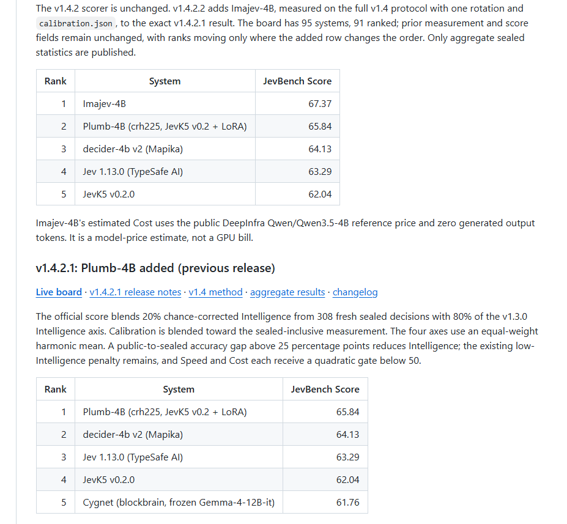
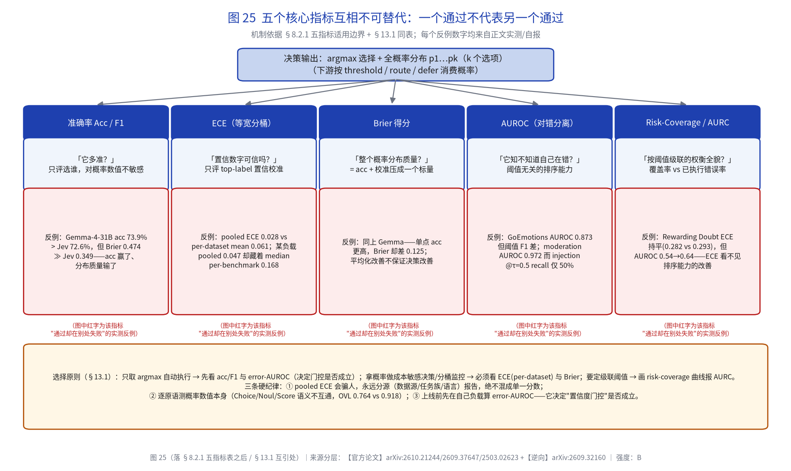

本章系统梳理 Jev 与 System One 决策模型的评测体系：两类事实标准基准的定义与可信度、五类核心指标的适用边界、概率公理一致性评测新前沿（RQ6）、专项基准矩阵，并给出可落地的最低评估协议与数据卫生规范。
必须强调一个纪律：不同基准/版本/硬件/数据划分的数字不可排进同一张排行榜进行比较
Jev 发布后两周内，评测工作沿四个目标独立生长：测准不准（Bonn）、测概率数值对不对（Sys1Cal）、测概率自不自洽（公理三连）、测抗输入操纵能力（JevAdvBench）。四类指标对应决策输出的四种消费方式 ——argmax 决策、数值概率、阈值路由、动作契约，不存在单一通用标尺。
本章内容主要基于如下材料（截止1005）进行汇总，这里说明：
| 标识 | 类型 | 规模定义 | 核心度量 |
|---|---|---|---|
| fstandhartinger/jevbench | 基准本体 + 实时榜 | v1.4.2.2：95 系统 / 91 排名 | Intelligence/Calibration/Speed/Cost 四轴复合 |
| jev-benchmarking（arXiv:2609.37647） | 学术零打点评测 | 37 数据集 / 346,009 请求 /$9.40 | 零样本 acc + ECE + 选择性预测 + 记忆探针 |
| Sys1Cal-v1（arXiv:2609.35342） | 逐点真值数据集 | 365 样例 / 92 问题 | 每命题 P (A) 数值吻合度（OVL） |
| arXiv:2609.33209 | 公理 battery | 160 items/$0.076 | negation/partition 等 7 条概率恒等式 |
| arXiv:2609.33971 | 层级相干性评测 | 3 数据集 / 72,000 问 | coarse–fine 概率可加性 |
| arXiv:2609.37470 | 概率契约基准 | 1,000 worlds/11,913 slots | 精确后验真值 + 跨接口动作后果 |
| CJ-Bench（arXiv:2609.36965） | 中文基准 | 307,900 held-out | 中文 ACC/ECE/ 延迟 |
| JevAdvBench（arXiv:2609.31142） | 对抗基准 | 812 题 / 9,744 变体 /$0.41 | 输入侧鲁棒性 vs 重跑噪声地板 |
| RLCDAlignBench（arXiv:2609.29429） | 失效检测基准 | 10 类失效 × 44 基准 / 7,193 实例 | 零样本对齐失效检测 AUROC |
| imaddde867/jev-position-test | 顺序探针 | n=6 单克隆 | 选项排列不变性 |
| bydeng01/scientific-decision-eval | 传导式评测 | S2：20 组 / 40 题 / 13 模型 | 单格错误→下游结论错误传导率 |
| 论文 2609.32160（TDM 审计） | 审计综述 | 28 篇 corpus/14 项清单 | 评测纪律合规率 |
7.1、生态事实标准基准解剖
7.1.1、JevBench：四轴复合榜
先厘清一个同名陷阱：GitHub 上有两个都叫
jevbench 的仓库，owner 不同、内容无关，引用时必须带
owner。本节的主体是
github.com/fstandhartinger/jevbench（社区基准工程）即 JevBench v1.x
基准本体；另一个 dhruvmehra/jevbench（8
stars）是同名独立小横评；
JevBench 由社区独立运营，README 明示不隶属、不被 TypeSafe AI 背书，是包含数据集、冻结评分代码、历史快照与实时榜单的完整工程体系。
JevBench 无对应 arXiv 论文，纯工程基准，被生态内多数项目以 adapter 方式对接，是引用最广的通用基准。其比较好的方面包括：题目冻结并哈希、修订日志明确标注 "冻结后题目与答案永不更改"、v1.2.3 公开修正三处 cost 计算错误且强调不改排名。
下面进行详细介绍。
评分规则（v1.3.0 起）：总分 JevBench Score = Intelligence、Calibration、Speed、Cost 四个维度各 25% 的几何平均；Intelligence 低于 50 时整分乘以 (Intelligence/50)²。
| 维度 | 定义 | 定义说明 |
|---|---|---|
| Intelligence | (accuracy − chance)/(1 − chance)，按档位 clip 0 | hard 30% / easy 14% / standard 28% / judge 28% |
| Calibration | hard 档 ECE + 对 gold 分布的 fidelity | 与 Intelligence 几何平均；纯 label-only 系统记 0 |
| Speed | mean(score(p50), score(p95))，score(s)=100−20·log10(s/0.1s) | 延迟越低分越高 |
| Cost | 100−30·log10(cost_per_1000_decisions / 0.001) | 按千决策计，不以 token 为单位 |
数据组织：
v1.2 共 534 道决策，公开档 231 道；hard 档 220 道（111 公开 + 109 留出），由 Claude Opus 5 与 GPT-5.6 Sol 撰写并在运行前冻结哈希；judge 档完全私有；
v1.4 新增 308 道密封题防过拟合，规定公开 / 密封准确率差 >25pp 扣 Intelligence 分；
Cost 轴以 Jev 1.13.0 均 950 input tokens / 决策、$0.042/M input 折算约 $0.0399 / 千决策为锚。
榜单关键快照：

| 版本 / 规则 | 前五节选（总分降序） | 规模 |
|---|---|---|
| v1.4.2.2 | Imajev-4B 67.37 > Plumb-4B 65.84 > decider-4b v2 64.13 >
Jev 1.13.0 63.29 > JevK5 v0.2.0 62.04 |
95 系统 / 91 排名 |
| v1.2 历史 | Jev 1.13.0 74.4 > SemIf (Qwen3.5-4B) 73.1 > djev 73.0 > Winnow-12B Q8 71.2 > reflex 4B 70.3 | 48 排名行 |
注意跨版本不可比：v1.4.2.2 与 v1.2 题库、权重均不同，分数随版本漂移，不构成同一标尺下的前后名次对比；另外，v1.4.2.2 榜首 Imajev-4B 高于闭源 Jev 为四轴混合分结果，不等价于特定任务上的精度优势。
7.1.2、dhruvmehra/jevbench：经典 NLP 基准独立横评
该同名仓库与 fstandhartinger 版本无关，将托管 Jev、开源 Laya、GPT-5-mini、Claude-Sonnet-5、微调 DistilBERT、bart-large-mnli 零样本 NLI 置于 sst2/agnews/banking77 三个经典分类集上并排对比，默认每集 n=500。
sst2 / agnews / banking77是 NLP 分类领域公认的标准基准套件，分别对应二分类、粗粒度多分类、细粒度高基数路由三类典型场景：
SST-2（Stanford Sentiment Treebank 2）
基本属性：斯坦福大学发布的电影评论情感二分类基准，标签只有“正面 / 负面”两类；训练集约 6.7 万句、测试集约 1821 句，输入为单句短文本；
难度定位：低难度、高共识的入门级二分类任务，是所有分类模型的基础标尺；
验证 Jev 的二值原语（Noul / 二元 Choice）在最简单的经典分类场景下，能否打平微调分类器与通用 LLM 零样本表现，属于“及格线”级别的对照
AG News（AG's News Corpus）
基本属性：来源于路透社等新闻源的主题分类基准，共 4 类（世界、体育、商业、科技）；训练集约 12 万条、测试集约 7600 条，输入为新闻标题 + 短描述；
难度定位：中难度粗分类，类别语义区分度高，是 4 选项多分类的经典参照；
测试 4 选项 Choice 原语的多分类准确率，验证低基数多选下的读出稳定性；同时对照“零样本决策模型 vs 微调 NLI 模型”在常规主题分类上的相对位置；
Banking77
基本属性：PolyAI 发布的银行客服意图数据集，共 77 类细粒度用户意图（如“查询余额”“挂失卡片”“投诉手续费”等）；训练集约 1 万条、测试集约 3080 条，输入为真实用户对话 query，很多类别语义高度接近、边界模糊；
难度定位：高基数细粒度路由任务，是工业级“意图分诊 / 路由”场景的典型代表，也是三个数据集中最难、最能拉开模型差距的一个；
对应 Jev 最主流的落地场景 —— 客服 / 系统意图路由；专门用来观测高基数选项下，决策模型的读出精度会不会显著衰减；
其特征在于：
同一份 label 描述复用到全部范式，保证跨范式公平；
主动声明微调 BERT 与零样本方回答的不是同一问题；
工程上实现了准确率与延迟分离测量，响应缓存机制使复跑准确率零成本；
局限为样本量小（95% CI ≈ ±2.5pp），作者自认排名并列居多，不足得出强结论 —— 其价值在于提供了经典 NLP 基准的外部视角；
7.1.3、jev-benchmarking：学术侧零打点评测
论文【2609.37647，《Evaluating and Benchmarking the System One Model Jev》】是首份系统性零打点评测论文，配套仓库为【https://github.com/AppliedMachineLearning-Lab/jev-benchmarking】，属于首份在开源基准上的系统评估.
规模与成本：37 个数据集，覆盖 3 种原语 × 7 个任务族、200+ 语言变体，全程零样本无 in-context example；
针对 Jev 的三种核心原语（Choice、Score、Noul），论文将 37 个公开数据集 映射为结构化请求，涵盖七大任务类别：
文本分类（如 AG News、IMDB、GoEmotions）
意图与主题路由（如 Banking77、CLINC150、SIB-200）
自然语言推理、释义与事实核查（如 ANLI、PAWS、LLM-AggreFact）
阅读理解与知识问答（如 BoolQ、Belebele、MMLU、C-Eval）
常识与推理（如 HellaSwag、WinoGrande、BIG-bench）
安全、审核与法律文本（如 ToxiGen、OpenAI Moderation、UNFAIR-ToS）
评分量表（如 STS-B、SummEval、HelpSteer2）
总计 346009 请求、217.9M input token、总成本 $9.40；平均延迟 0.36s，全量运行 5 小时 15 分；
核心结果与发现：
准确率：语言识别与常识类任务接近满分（Language ID 99.6%、BoolQ 91.3%）；情感类 93–97%；路由类 CLINC150 89.5%、Banking77 79.7%；grounding/NLI 类 67.7–85%；最弱项 AGB-DE（德消保条款，4.9% 正例）F1 仅 0.204、AUROC 0.784。
Jev 在 IMDB、SST-2、HellaSwag、ARC 上达到 95–99% 准确率；在 Emotion、SST-5、AGB-DE 等细粒度或专业判断任务上性能显著下降；
校准分层：22 个 Choice 数据集 pooled ECE = 0.028（median per-dataset 同为 0.028，unweighted mean 0.061）；对照 Qwen 0.063、Gemma 0.208。但三原语校准质量不一致：
| 原语 | Jev ECE | Qwen ECE | Gemma ECE | 方向 |
|---|---|---|---|---|
| Choice（pooled） | 0.028 | 0.063 | 0.208 | 略过自信 |
| 单 Noul | 0.052 | 0.113 | 0.123 | 略欠自信 |
| 多标签 Noul | 0.168 | — | — | 严重过预测 yes |
胜负对比：Jev 胜 Qwen 27/37、负 9、平 1（11 个领先 CI 不重叠）；Gemma 在全部 37 数据集上低于 Jev、31 个 CI 不重叠。在 路由与 grounding 族上优势最显著。
选择性预测：50% coverage 下 Banking77 准确率从 79.7% 升至 96.3%，ANLI 从 73.9% 升至 86.9%，置信度排序有效。
阈值重调：默认 0.5 阈值普遍错位。
- 在 1000 例验证集上以步长 0.01 重选阈值后，UNFAIR-ToS micro-F1 从 0.499 升至 0.748，GoEmotions macro-F1 从 0.243 升至 0.353；但 AGB-DE 无改善，判断为分离度不足而非阈值错位。
多语言：
Belebele 英文 97.2%、122 语言均值 86.7%，但低资源语言如 Nigerian Fulfulde 仅 37.4%；
Score 打 rubric 是唯一 Qwen 追平 / 反超领域，说明生成文本质量判断超出 System1 单步能力；
反常发现：Jev 在 MMLU 计算密集科目上准确率反而更高（聚合 94.3% vs 其他科目 91.3%），与两个对照模型方向相反
作者通过选项旋转与撤题两轮探针排除了浅层记忆，但明确承认无法区分 "训练见过真题" 与 "真能单步解题"；
建议对老牌英文基准结果保持警惕 ——因为存在训练记忆的问题；
7.2、指标体系：准确率、校准、排序与选择性预测
7.2.1、五个核心指标的定义与适用边界
决策模型概率同时被下游 threshold/route/defer 消费，单一准确率远不足够，这里定义5个评价指标，各对一个方面，请注意【参考 TDM 审计】：
聚合 ECE 骗人：pooled ECE 0.047 看似良好，但 median per-benchmark ECE 可高达 0.168，聚合数字掩盖了基线率错配 —— ECE 必须 pooled 与 per-dataset 同报。
分桶方式影响结论：分桶数（10/15/20）与等宽 / 等频选择会改变 ECE 数值，必须随数字一同报告；
2609.33971 在 10/15/20 bins 下重复 Laya MASSIVE 的 ECE 反升结论（0.046→0.124 方向不变），说明该结论对分桶不敏感；
但多数论文只报一种分桶；
排序好不等于开箱即用：AUROC 为阈值无关指标，与固定阈值下的 F1 / 召回率是两回事
Bonn 里 OpenAI moderation 各类平均 AUROC 0.972，但 prompt injection 在 固定 0.5 阈值下 recall 仅 50%；
| 指标 | 度量目标 | 适用边界与陷阱 |
|---|---|---|
| 准确率 Acc | argmax 选对比例 | 只评 "选谁"，对概率数值不敏感； 饱和测试上的打平无信息量 |
| ECE（15 等宽 bin） | 置信度与正确率的系统偏差 | 仅评 top-label
置信校准； 测不出每个选项概率的数值含义，也测不出跨原语一致性 |
| Brier 得分 | (q−c)²，同时惩罚错误与过度自信 | 将准确率与校准压缩为单一标量； 是评分规则 RL 的核心零件，但平均化改善不保证决策改善 |
| AUROC | 概率区分正负类的排序能力（阈值无关） | 排序好 ≠ 阈值指标好：GoEmotions AUROC 0.873 但多标签 Noul 阈值 F1 很差 |
| risk-coverage / AURC | 按置信度排序后高置信区准确率 | 选择性预测核心指标 |
需要注意：五个核心指标互相不可替代——一个通过不代表另一个通过

7.2.2、Sys1Cal-v1：逐点概率真值与第三真值修复
论文 2609.35342《Jev thinks "I don't know", but doesn't say it: Introducing Sys1Cal-v1 Dataset for Probability Calibration》指出了当前的评测盲区：现有基准仅测 top-label 置信校准，不测 P (A) 数值本身的正确性，因为只有 realized label 而无逐点真值分布。
简单来讲，realized label 是单个样本的“最终对错结果”，逐点真值分布是单个样本的“真实概率数值”；
绝大多数分类基准只有前者、没有后者，因此只能测“跨样本的平均校准”，测不出“每个概率数值本身准不准”；
Sys1Cal-v1 的做法是：不用真实世界的样本，用程序生成受控题目，把每个命题的真实概率 P*(A) 精确写死，比如其构造了六类概率族：
频率型：罐子里 70 个红球 30 个蓝球，摸出红球的概率 = 0.7；
条件型、贝叶斯型、序列型…… 每道题的真实概率都是数学上精确已知的有理数；
这样每个样本就不再只有“对 / 错”标签，而是有一个精确的逐点真值分布—— 可以直接拿模型输出的概率 p̂ 和真实概率 p* 比数值误差，即分布重叠度指标 OVL = 1 − |p̂ − p*|，本质评价的是“单样本概率数值的吻合度”：
真实 0.7，模型输出 0.7 → OVL = 1.0（完全命中）；
真实 0.7，模型输出 0.764 → OVL = 0.936；
真实 0.7，模型输出 0.9 → OVL = 0.8；
在规模 365 样例 / 92 个 latent 问题上进行了评估：
- 逐点看，Choice 原语输出的概率数值和真实概率平均偏差约 0.236，数值吻合度并不高； 但这和 Bonn 测出的 Choice pooled ECE = 0.028 并不矛盾 —— 因为 ECE 是跨样本平均校准，高估和低估抵消后看起来很好
| 输出 | Mean OVL |
|---|---|
| Jev-Choice | 0.764 |
| Jev-Noul | 0.918 |
| Jev-Score | 0.886 |
| SemIf-Choice（基线） | 0.629 |
启发：概率校准与逐点校准不是一回事，其对应的是不同的决策模型下游用法
只有 realized label 的基准，只能验证频率校准（ECE） ——ECE 合格不等于概率可逐点用于决策，ECE 好看只说明平均上对，不说明每个概率值本身准；
有逐点真值的基准，才能验证概率数值本身的质量；
| 校准维度 | 度量指标 | 对应下游用法 |
|---|---|---|
| 频率校准（top-label 校准） | ECE | 只拿 argmax 做决策、用置信度做粗粒度阈值 / 升级 |
| 逐点数值校准 | OVL / Brier / TV 距离 | 拿概率数值做计算：贝叶斯更新、期望损失、风险定价、级联精确阈值 |
7.2.3、统计纪律现状：TDM 早期证据审计/综述
论文 2609.32160《Typed Decision Models: An Early Evidence Audit and Evaluation Checklist》（Northeastern，2026-09-26）对 Jev 发布后 9 天内涌现的 28 篇论文做系统综述，给出 14 项评测清单与合规率统计（对27 篇评测论文统计），是本章评估协议的主要依据：
| 清单项 | 合规率 | 说明 |
|---|---|---|
| B1 同 backbone label-logprob baseline | 5/26 | 绝大多数无对照，无法归因 typed 接口收益 |
| B2 廉价生成级联 baseline | 1/5 | 几乎无人对照便宜生成级联 |
| B3 任务特定模型 baseline | 7/13 | 专用分类器对照不足 |
| T3 选项名不变性测试 | 1/27 | 几乎无人测选项重命名 / 重排 |
| R2 headline 置信区间 / 显著性 | 15/27 | 近半数头条结果无 CI |
| C1 calibration 度量 | 13/17 | — |
| C3 阈值与评测集分离冻结 | 7/7 | 适用者基本全合规 |
| C4 latency 报缓存前后 | 3/20 | 延迟测量方式普遍缺失缓存区分 |
- 14项清单的详细扩展：
| 分组 | ID | Report | Why it matters / failure observed 意义 & 观测到的失效案例 |
Count |
|---|---|---|---|---|
| Baselines 基线设置 |
B1 | A baseline that reads label log-probabilities from an ordinary or
same-backbone LM. 基线：使用普通大模型 / 相同骨干模型读取标签对数概率。 |
Otherwise interface gains cannot be separated from model gains; the
same backbone is the most informative choice; where tested, the readout
added little accuracy (Finding 1). 否则无法区分效果提升来自 TDM 接口本身还是骨干模型；同骨干对照是最有参考价值的基线；已有对照实验发现，这套读出方式几乎不带来精度提升（核心结论 1）。 |
5/26; 1 unclear |
| B2 | Where a confidence threshold passes decisions to another model: a
cheap generative cascade as a baseline. 基线：如果依靠置信阈值把请求转交其他模型，必须设置廉价生成式级联作为对照基线。 |
On external τ²-bench a cheap generative cascade was cheaper than the
TDM cascade and not less accurate [71]; two of six open-weight LLMs in
Jev’s price range had higher median macro-F1 [28]. 在 τ²-bench 基准上，廉价生成模型级联比 TDM 级联成本更低、精度不差 [71]；和 Jev 同价位的 6 个开源大模型里，有 2 个中位数 macro-F1 更高 [28]。 |
1/5 | |
| B3 | Where labeled data suffice to train one: a task-specific model
(encoder, classical classifier, reward model or probe) as a
baseline. 基线：标注数据充足时，使用任务专用模型（编码器、传统分类器、奖励模型、探测头）作为对照基线。 |
Fine-tuned encoders were not significantly worse than an open TDM in
ranking and had nominally lower ECE (but higher Brier) and were faster
[54]; trained quality models stayed well ahead [56]. 微调编码器在排序任务上和开源 TDM 差距不显著，ECE 更低（但 Brier 更高）且速度更快 [54]；专门训练的质量评估模型效果持续领先 [56]。 |
7/13; 3 unclear | |
| Test design 测试设计 |
T1 | Spread between models on the test; avoid parity claims on saturated
tests. 测试设计：报告模型间性能差异；禁止在天花板饱和任务上宣称效果等价。 |
Several parity results come from tests on which strong models are at or near ceiling (Finding 2).不少 “效果持平” 结论来自强模型已经接近满分的测试集（核心结论 2）。 | – |
| T2 | Correctness or agreement of individual decisions across repeated,
reordered or reworded requests, not only aggregate accuracy. 测试设计：除整体准确率外，还要评估请求改写、重排、重复提交后，单条决策结果是否一致、正确。 |
Equal aggregate scores hid different decisions [79]; correct final labels hid wrong intermediate choices [16].总体得分相同，背后决策结果可能完全不一样 [79]；最终标签选对了，中间判断步骤依然可能出错 [16]。 | 17/26; 1 unclear | |
| T3 | Option-name invariance test: swap names across rubrics or compare
neutral with semantic names. 选项名称不变性测试：在评判细则之间调换选项名称，或者对比无含义代号名称和带语义名称两种形式 |
Swapping no/yes across rubrics moved Jev AUC from .815 to .581 with
zero type errors [61]; asking through Score instead of Choice moved
graded accuracy by up to 10.5 points [53]. 在评判细则互换 yes/no 标签后，Jev 的 AUC 从 0.815 跌到 0.581，且没有出现类型报错 [61]；调用接口时改用 Score 原语而不是 Choice 原语，分级准确率最高可达到10.5个点 |
1/27 | |
| T4 | T4 Data provenance: synthetic or real, gold-label source, and
whether a public benchmark predates the model. 测试设计：披露数据来源：合成数据 / 真实数据、金标来源、公开基准数据集是否早于模型发布。 |
The corpus includes agent-generated texts with agent-generated labels [36] and unresolved contamination concerns [28,79].这批研究里存在智能体自生成文本 + 自标注数据 [36]，还有尚未排除的数据污染风险 [28,79]。 | – | |
| Reproducibility and statistics 可复现性与统计 |
R1 | R1 Exact model version and run date 可复现性：写明精确模型版本、调用时间。 |
Hosted TDMs are closed and may change under a stable name; several
papers provide neither. 商用托管 TDM 是闭源的，同名版本可能静默更新；多篇论文两项信息都没有提供。 |
– |
| R2 | R2 Confidence intervals or significance tests on headline
results 可复现性：核心结果提供置信区间或者显著性检验。 |
Twelve of the 27 report neither for their headline results. Because
the hosted model is not deterministic [61,79], repeated-run stability
should also be reported where feasible. 27 篇里面有 12 篇核心结果两者都不给。托管模型本身具有非确定性 [61,79]，条件允许时还应报告多次运行的稳定性。 |
15/27 | |
| R3 | R3 Disclose prompts, recipes, baselines, or thresholds chosen after
seeing test data. 可复现性：披露所有看完测试结果之后才选定的提示词、实验方案、基线、阈值。 |
At least seven papers make such choices; one series of redesigns
moves the headline metric from .576 to .797 [56]. 至少 7 篇论文存在这类事后调参；有一项工作反复调整方案，核心指标从 0.576 提升到 0.797 [56]。 |
– | |
| Confidence & deployment 置信度与部署 |
C1 | Where the TDM’s probabilities are used or described as calibrated:
calibration measured with ECE, Brier score, reliability analysis or an
equivalent metric. 置信部署：如果使用 TDM 概率、宣称概率经过校准，必须用 ECE、Brier 分数、可靠性分析等指标评测校准效果。 |
Held-out data, a metric suited to label prevalence, and results
before and after any recalibration are preferable. Raw probabilities are
miscalibrated in some workloads; recalibration reduces error by 3.3×,
while a 0.01 grid limits rare-label resolution [52]. 优先使用留出集、适配标签分布的指标，同时上报重校准前后结果。原始概率在部分任务校准很差；重校准可以把误差降低 3.3 倍，但两位小数（0.01 步进）限制了稀有标签的分辨能力 [52]。 |
13/17; 1 unclear |
| C2 | Accuracy among the highest-confidence examples, by task. 置信部署：按任务统计高置信样本子集的准确率。 |
The corpus contains high confidence at near-base-rate accuracy [28]
and wrong tool calls with mean confidence .778 [71]; under optimized
answer-preserving context, 45% of Jev’s initially correct decisions (73%
of those redirected) end with probability ≥ 0.7 on the wrong option
[73] 已有文献发现：高置信样本正确率接近随机基线 [28]；错误工具调用的平均置信度高达 0.778 [71]；在精心构造的上下文下，Jev 原本正确的决策里，45%（被篡改样本里 73%）最终把≥0.7 置信分给错误选项 [73]。 |
– | |
| C3 | Where confidence thresholds gate acceptance or escalation:
thresholds fitted on data separate from the evaluation set, or fixed
before evaluation and not tuned on it. 置信部署：置信阈值用于放行 / 转交时，阈值只能在测试集之外的数据拟合，或者实验前固定，禁止在测试集调参。 |
Frozen thresholds should also be tested for transfer across
workloads or fallback models, since thresholds fitted on a selection set
did not hold on held-out items for every fallback, and fitted
temperatures differ across workloads [39]; some fixed thresholds are
applied to scores the authors explicitly do not assume to be calibrated
[29]. 固定阈值还要跨任务、跨复核模型测试泛化能力；在筛选集调好的阈值不一定在留出集生效，最优温度参数随任务变化 [39]；部分论文直接把阈值套在作者自己都不认为已经校准的分数上 [29]。 |
7/7; 3 unclear | |
| C4 | Where TDM latency is reported or a latency advantage is claimed:
latency both with and without caching. 置信部署：宣称延迟优势时，同时上报开启缓存、关闭缓存两套延迟数据。 |
Serving location, concurrency and measured cost per correct outcome
should also be stated. Caching removes one reported latency advantage
[36]; two sibling papers report opposite cost directions on different
workloads [36,37]. 还应标注服务地域、并发量、每一次正确推理的成本。缓存会抹平一部分延迟优势 [36]；两篇同源论文在不同任务上得到相反的成本结论 [36,37]。 |
3/20; 1 unclear |
另外，论文定义了TDM的三要素：
选项集合在请求时动态传入，不是训练时固定标签；
单次请求可以批量跑多个独立问题，各问题决策互不干扰；
直接输出归一化概率分布，下游代码基于概率做分流、阈值判断、转交复核，而不是只取最大概率答案；
定义了8个核心构成组件：
| TDM 核心组件（Component） | Closest ancestor 技术前身 |
What TDMs change （TDM 改造点，原文） |
详细解读 |
|---|---|---|---|
| Scoring a label set by LM probability 基于大模型概率对标签集合打分 |
Cloze/verbalizer classification（完形 / 文本化分类）Likelihood scoring（似然打分） | Options declared per request rather than fixed verbalizers 选项随单次请求传入，不再是训练阶段固定的 verbalizer 标签词 |
传统 verbalizer
分类：训练时就定好每个类别对应的提示词（如yes/no），标签集合固化；TDM 保留 “拿模型 token 概率打分” 这个底层能力，但标签集合每次 API 调用由调用方自定义，同一个模型可以今天做 3 分类、明天做 7 分类，不需要重新 SFT。论文核心结论 1 的来源：很多宣称 TDM 更强的效果，本质只是同骨干模型的标签概率打分，TDM 专用接口本身不带来稳定精度增益 |
| Option-label readout 选项标签读出层 |
Multiple-choice symbol binding 多选题符号绑定 |
Named options may include rubrics rather than letters 选项可以附带评判细则（rubric），而不只是 A/B/C 字母 |
传统多选打分一般只用简短字母 / 代号区分选项； TDM 支持每个选项带上完整判定规则。例如：选项 A 附带判定标准 “属于合同违约：满足 XX 条件”；模型不是单纯匹配文字，而是按 rubric 做判断。 风险点（后文实验 T3）：TDM 很容易被选项字面名称干扰，调换选项文字名称、含义不变时，决策会大幅漂移，这是鲁棒性短板 |
| Guaranteed valid output 输出合法性保证 |
Grammar-constrained decoding 语法约束解码 |
Returns a renormalized distribution without token generation 输出归一化概率分布，不生成自由文本 token |
约束解码（如 CFG、JSON-gram）是限制生成文本只能在合法集合里；TDM 更进一步：放弃逐 token 生成文本，直接输出在传入选项上归一后的概率。对外接口承诺：输出一定落在你给的候选集合里，不会跑出额外答案；这是面向软件系统最关键的契约，程序不需要做输出校验、解析、容错。注意：论文提示，底层实现很多开源 TDM 依然在内部算 token logit，只是对外屏蔽文本 |
| Fine-tuned label-token head 微调标签 token 输出头 |
Yes/no rerankers（二选一重排器）generative verifiers（生成式校验器） | Arbitrary option sets; many questions per call 支持任意选项集合；单次请求批量处理多个独立问题 |
早期重排器、校验器大多固定少量候选、单次一问； TDM 输出头支持：一个上下文（同一段文本），一次性提交 K 个互不干扰的决策问题，各自有独立候选集，批量返回各组概率。 工程价值：减少多次轮询开销，适合 Agent 里批量判断多个条件；但代价：问题之间依然存在隐性上下文污染风险 |
| Runtime labels in small encoders 编码器动态标签 |
NLI zero-shot classifiers（NLI 零样本分类）GLiClass | Presented as a general decision interface 封装成通用决策接口 |
GLiClass 这类编码器零样本分类，已经支持动态标签； TDM 的创新不在编码器打分机制，而是把这套能力标准化成统一 API 契约（Choice/Score/Noul 原语），统一输入输出范式，不管底层是 Decoder、BERT 式编码器，对外都是同一套调用方式。 开源 TDM（Open-Jev、Laya）大多走这条技术路线 |
| Rubric-conditioned judging 评判细则驱动打分 |
Prometheus、G-EvalLLM 评判模型 |
Rubric attached to each option 评判细则绑定到每一个选项 |
G-Eval、Prometheus 是用自然语言标准让大模型打分； TDM 把评判标准从全局 prompt 里拆出来，绑定到单个选项上。典型场景：内容审核、医学报告判读、人工标注自动化；每个选项自带判定规则，模型基于规则分配概率，而不是自由写评语。 短板：模型容易 “读字不读义”，对 rubric 理解不稳定，是 T3 鲁棒性测试重点考察项 |
| Confidence-based escalation 基于置信度的逐级转交 |
Reject option（拒绝选项）LLM cascades（大模型级联） | Cheap first stage with a native probability 原生概率输出，作为低成本第一级 |
选择性分类、模型级联早已有 “低置信交给更强模型 / 人工”； TDM 的差异化：置信度（概率）是原生一等公民输出，不是后算出来的附属指标。 这就是业界最主流的TDM 级联部署范式：TDM 做廉价初审；置信低于阈值，路由到强生成模型复核。 论文明确局限：如果两级模型错误高度相关，复核几乎无效；不能默认置信度可靠 |
| Calibration training 校准训练目标 |
RL with proper scoring rewards 基于恰当打分函数的强化学习 |
Calibration is part of the product objective (RLCD) 概率校准是主训练目标（Jev 称为 RLCD） |
以往分类模型的校准大多是后处理（温度缩放、Platt 缩放）；Jev
宣称在训练阶段就用 RLCD（Reinforcement Learning for Calibrated
Decisions），把概率校准直接放进奖励目标，希望输出概率和真实正确率匹配。 但论文实测结论：RLCD 不能跨场景保证校准；分布漂移、陌生任务下 ECE/Brier 会明显恶化，高置信样本依然大量出错，对应评估清单 C1/C2 |
7.3、概率一致性与公理评测
校准是跨样本的平均性质：报 p 的事件长期以 p 频率发生。但它不要求同一 case 上逻辑相关问题逐项自洽。违反概率公理的模型在 pipeline 中表现为 "动作取决于提问措辞"。
一个模型可以给"claim is supported" 0.7、同时给"claim is not supported" 0.6，这违反 Kolmogorov 补事件公理，在 pipeline 里表现为"动作取决于正面还是负面措辞"！
这对应了我们的一个RQ：决策模型的概率是否满足一致性/公理。相关证据主要由如下独立评测构成。
7.3.1、否定 / 划分公理（arXiv:2609.33209）
论文2609.33209《Beyond Calibration: Do a Typed-Decision Model's Probabilities Obey the Probability Axioms?》（东北大学沈阳，2026-09-27）构造 label-free 的 7 恒等式（negation complement、disjunctive complement、partition additivity、disjunction additivity、description invariance、monotonicity、cross-format consistency）160 items（ChaosNLI 100 + PubMedQA 60），对照 Jev（jev-1.13 经 OpenRouter）与 Qwen3.8-27B 两种读出：
这 7 个恒等式，等于 7 条概率必须遵守的数学铁律（公理），用来自检：不需要正确答案，也不用和外部事实比，只看模型自己输出的概率 “前后矛不矛盾、内部自不自洽”；
它测的既不是准确率（答得对不对），也不是 ECE（平均校准好不好），而是概率输出的内部逻辑一致性——
同一件事换个问法、换个接口、拆成不同选项，模型给的概率能不能自圆其说；
前面看到的两类评测都有局限：
准确率 / ECE：要和外部真实标签比，测的是 “和事实对不对得上”；
Sys1Cal OVL：要和逐点真实概率比，测的是 “数值准不准”；
这里评测覆盖的情况是：哪怕模型整体校准不错、准确率也高，它输出的概率本身可能在数学上是 “自相矛盾” 的；
所有的7个恒等式均基于同一个逻辑：对同一个事件，换一种等价问法，模型输出的概率应该满足数学恒等关系——如果存在偏差且偏差越大，说明越不自洽；
| 恒等式名称 | 数学含义 | 测的核心问题 | Jev 实测偏差（越小越好） |
|---|---|---|---|
| 1. 否定互补 Negation complement |
P(A) + P(¬A) = 1 一件事发生的概率 + 不发生的概率 = 100% |
最基础的正反问法一致性：正着问反着问，概率加起来是不是 1 | 0.064（偏差很小，表现最好的一项） |
| 2. 析取互补 Disjunctive complement |
P(A∨B) + P(¬A ∧ ¬B) = 1 “A 或 B 发生” 的概率 + “AB 都不发生” 的概率 = 100% |
把单个否定扩展成两个事件的并集，测扩展后的互补性是否成立 | 0.054（和否定互补接近，偏差小） |
| 3. 划分可加性 Partition additivity |
所有互斥且穷尽的选项，概率之和 =
1； 比如三个选项覆盖全部可能，加起来必须是 100% |
Jev 最严重的缺陷：单标签概率之和平均 =
1.14，相当于三个选项各给 38%，加起来 114%，数学上不可能 |
0.141（偏差最大，核心短板） |
| 4. 析取可加性 Disjunction additivity |
若 A、B 互斥，则 P (A∨B) = P (A) + P (B)两个互斥事件 “至少一个发生” 的概率 = 两个概率相加 | 互斥事件的并集概率，是不是等于分别概率之和 | 0.138（偏差第二大） |
| 5. 拆包一致性 Unpacking |
同一事件，拆不拆开描述概率相等比如 “生病” 和 “得甲病或乙病” 如果等价，概率应一致 | 表述拆分 / 合并会不会扭曲概率，测 “表述形式对结果的影响” | 0.060（中等偏差） |
| 6. 单调性 Monotonicity |
若 A 能推出 B，则 P (A) ≤ P (B)子集概率不能大于母集（比如 “北京人” 概率 ≤ “中国人” 概率） | 会不会犯合取谬误：子集反而比母集概率更高 | 0.013（偏差极小，表现很好） |
| 7. 跨格式一致性 Cross-format consistency |
同一个问题，用 Choice / Noul / Score 不同原语问，概率应一致 | 接口格式会不会改变结果，对应 “跨接口动作分裂” 的底层原因 | 0.091（偏差中等偏上） |
整体评估来看，与 Qwen的First-Token相比，v 在几乎每条恒等式上更自洽，但 partition 与 disjunction 仍是最大短板；偏差随置信度升高而缩小。
7.3.2、层级相干性（arXiv:2609.33971）
论文2609.33971《Do System One Decisions Add Up? A Study of Probabilistic Coherence》测试了另一类相干性：同一决策先分粗类再选细类，是否满足"粗类概率 = 其细类概率之和"；
本质是把前面 7 个恒等式里的“划分可加性（Partition additivity）”放到真实的两级分类任务中做落地验证；
验证的是层级分类场景下的概率可加性：如果分类树逻辑自洽，那么 “一个粗类的概率” 应该严格等于“它下属所有细类的概率之和”；
基本假设：如果模型输出的概率满足概率论公理，那么“直接从所有细类里选”和“先选粗类、再选细类，最后汇总概率”两种方式，得到的最终准确率应该基本一致 —— 偏差越大，说明层级概率越不自洽；
具体来讲，论文用了 3 个天然带“粗 - 细”两级分类的经典意图 / 分类数据集：TREC（问题分类）、CLINC150（对话意图）、MASSIVE（语音助手意图）进行测试，分为两种测试模式：
| 模式 | 做法 |
|---|---|
| Flat （扁平模式） |
直接把所有细类选项全部列出来，让模型一次选出答案，直接算细类准确率。 |
| Marginalization （分层边际化） |
分两步走： - 先问“属于哪个粗类”，得到每个粗类的概率； - 再分别对每个粗类，问“属于该粗类下的哪个细类”，得到细类条件概率； - 用贝叶斯公式汇总：P（细类）= P（粗类）× P（细类｜粗类），再算最终准确率； |
论文在上述3个数据集的72K问题上，对比了Jev和Laya模型，但得到了反直觉的结论：
最反直觉：Jev 分层后准确率暴跌，Laya 分层后反而上涨
flat→marginalization 后，Jev 在 CLINC150 掉 22.9pp（91.0%→68.1%），Laya 反而涨 21.3pp（23.1%→44.4%），6 个 CI 全部排除 0；
Jev 暴跌的原因：正好对应前文公理评测里“Partition additivity 偏差 0.141”的短板 ——Jev 给每个单标签的概率普遍偏高，所有细类概率加起来会超过粗类概率（相当于 “概率预算超支”）—— 分层汇总后概率分布被系统性扭曲，准确率直接跳水；
Laya 上涨的原因：Laya 基座小、单步区分上百个细类的能力很弱；分层提问相当于给了它结构化提示，先缩小到粗类范围再选细类，相当于做了 “分而治之” 的辅助，反而帮它提升了判别力；
两者的错误来源完全不同：Jev 输在“概率数值不自洽，但单步判别力强”；Laya 赢在“分层结构补了判别力短板，但概率数值更不准了”
准确率与校准可脱钩
- Laya 在 MASSIVE 上，分层后准确率涨了 9.2pp，但 ECE 从 0.046 升到 0.124；
分层虽然帮它选对了更多答案，但输出的概率数值离真实正确率更远了 —— 猜对的题概率给低了、猜错的题概率给高了，整体置信度和正确率的匹配度变差；
这里实际印证了全文反复强调的一个核心判断：准确率和校准是两个完全独立的维度，不能用准确率高低推断校准好坏；
顺序鲁棒性不等于层级自洽性
flat 模式下，选项顺序翻转率 Laya 高达 62.5%–76.7%（换个排列顺序答案就变，非常脆弱），Jev 仅 5.8%–20.0%（顺序基本不影响结果）；
但顺序稳不代表概率自洽：Jev 抗顺序扰动的能力远强于 Laya，但层级可加性反而更差
7.3.3、概率契约与跨接口决策后果（arXiv:2609.37470）
论文 2609.37470《Probability Contracts: Accuracy, Coherence, and Decisions Across LLM Interfaces》把评测推到"有精确后验真值"的受控有限世界 —— 构造了一套“真实后验概率完全已知”的受控环境，同时度量三个经常被混淆的目标：数值精度 accuracy（离真后验多近）、内部一致性 coherence（跨等价表示是否自洽）、最终决策价值 decision value（按它动作损失多少），把 “违反公理” 从抽象数学问题落地成了 “会不会导致业务动作出错” 的工程问题，具体来讲：
普通评测基准只有 “对 / 错” 标签（realized label），只能算 ECE 这种跨样本平均校准，测不出单个样本的概率数值本身准不准；
论文通过程序生成了 1000 个独立的有限世界，每个世界里每个事件的真实后验概率都是精确的有理数（类似 “罐子里拿球” 的经典概率题，真值可由数学规则严格算出），共 11913 个可测槽位。这样就可以直接拿模型输出和真实概率比数值误差，不需要靠统计平均；
具体实验，对每个事件，用 Jev 的两种合法原语分别查询：
Event 接口：二元事件原生接口，直接问“事件 A 发生的概率”
Choice 接口：二选项选择题接口，问“A 和 ¬A 哪个对”
使用两个独立指标进行评估：
一致性残差：比如补事件 P (A)+P (¬A) 和 1 的偏差，越小说明越自洽；
TV（总变差）距离：模型输出概率和真实后验的数值差距，越小说明越精准；
关键发现：
跨接口动作分裂：32.8% 的事件输出相反动作
现象：同一个事件，用 Event 和 Choice 两种接口问，得到的概率数值存在系统性偏差。当业务设置了固定决策阈值（比如置信度 ≥0.9 自动执行，否则人工复核）时，有 32.8% 的事件会因为接口不同，刚好跨过阈值，得到完全相反的动作；
细节：所有分裂都发生在 act/defer（执行 / 复核）边界，没有出现正反答案完全颠倒的极端情况，但对生产已经足够致命 ——同一个事件，A 模块用 Event 接口放行了，B 模块用 Choice 接口卡了，系统逻辑完全不一致。
原文典型案例：同一事件真实后验 ≈0.694，Event 接口输出 0.84（低于 0.9 → 人工复核），Choice 接口输出 0.97（高于 0.9 → 自动执行）；
本质原因：Jev 的不同原语（Choice/Noul/Score）有各自独立的概率语义，不是同一个概率的不同格式包装 —— 这和 7.2.2 Sys1Cal 里“三原语 OVL 差异巨大”的结论完全呼应。
精度序与一致性序可反转：一致性残差只暴露 "可证部分错误"，共享错误须有真值才能发现
两个指标：一致性残差、TV距离
反直觉现象：
单看补事件一致性：Jev 残差 0.0929，远好于 Kev 的 0.5055，看起来 Jev 更 “靠谱” —— 一致性残差更小，更自恰；
但看整体数值精度：Kev TV=0.2350，反而优于 Jev 的 0.2677 —— 更精确；
这说明致性只能测出“自己和自己矛盾”的错误，测不出“大家一起错”的共享偏差，也即：
不能用“公理一致性排名”代替“准确率排名”，两者是完全独立的维度；
只看一致性选模型，可能选出 “自洽但不准” 的选项；
模型甲：P (A)=0.7，P (¬A)=0.6，加起来 1.3，一致性很差，但数值和真值接近
模型乙：P (A)=0.3，P (¬A)=0.7，加起来 1.0，一致性完美，但数值全错
可重复性：exact repeat pass 率仅 74.5%，均值接近不等于逐例稳定
也就是完全相同的请求重复调用两次，只有 74.5% 的样本两次输出概率差小于 0.02，剩下 25.5% 的样本存在不可忽视的逐例抖动；
需要辨析：
这不是“整体准确率不稳定” —— 平均误差变化非常小；
但单个样本的抖动足以跨过业务阈值，比如阈值 0.5，第一次输出 0.51 通过，第二次 0.49 驳回，出现“同请求不同结果”的非确定性；
论文明确的立场为：总排名分数（或基于单一分数的合成分数）是不可靠的 —— 不能使用一个总分或合成评分排序所有模型——
不同类型的不一致对应不同的业务风险（补事件不一致、跨接口不一致、分层不一致影响完全不同），每条残差都有独立的含义；
不能随便加权合并成一个数字，否则关键信息会被平均掉；
7.3.4、小结：与校准评测的关系
三篇公理评测（从“否定 / 划分公理”“层级相干性”到“概率契约”）与 Sys1Cal 共同构成了一条完整的证据链（如下RQ6），覆盖了从“纯数学自洽”→“真实任务层级自洽”→“落地决策影响”的完整链条：
| 评测工作 | 核心命题 | 是否需要真值 | 核心结论 | 本质缺陷 | 落地影响 | 定位 |
|---|---|---|---|---|---|---|
| 7 恒等式公理（2609.33209） | 单事件的正反 / 拆分表述，概率是否满足基本公理 > 基础数学公理自洽性 > > |
否 （纯自洽测试） |
三选项概率和平均 1.14，划分可加性偏差最大 | 单标签概率普遍高估，互斥事件概率和严格大于 1 | 正反提问结果不一致； 拆分 / 合并表述会改变概率输出； |
抽象层：基础公理守不守得住 |
| 层级相干性评测（2609.33971） | 粗类概率是否等于下属细类概率之和（真实两级分类任务） > 真实任务层级可加性 > > |
否 （纯自洽测试） |
Jev 分层后准确率掉 22.9pp； Laya 分层后准确率涨 21.3pp 但 ECE 恶化； |
层级概率可加性不成立，分层汇总后概率分布系统性扭曲 | 层级分类、贝叶斯汇总、分域路由不能直接概率相加，会出现精度损失 | 任务层：真实分类场景下的自洽影响 |
| 概率契约基准（2609.37470） | 跨接口概率是否一致、精度与一致性是否相关、对最终动作的影响 > 精度 + 一致性 + 决策价值 三维度 > > |
是 （精确已知真实后验） |
跨接口动作分裂
32.8%； 精度序与一致性序可反转； 逐例重复通过率仅 74.5%； |
不同原语概率语义不互通； 逐例非确定性抖动； |
多接口混用会出现动作不一致； 阈值边界存在非确定性翻转； |
落地层：对实际业务动作的影响 |
三者证据都共同支撑的判断：
ECE 合格 ≠ 概率可用于逻辑运算：Bonn 【2609.37647】测出的 Choice pooled ECE=0.028 看似优秀，但三篇一致证明：聚合校准会掩盖逐点的自洽性缺陷，一旦拿概率去做相加、拆分、跨接口对比、贝叶斯更新，系统性偏差就会暴露。
不一致是结构性的，不是随机波动：三篇分别从
数学公理、真实任务、落地决策三个独立维度复现了概率不自洽，且偏差远大于重跑噪声地板，属于模型输出的固有属性，不是测量误差；自洽性、准确率、校准是三个独立维度，三者没有必然正相关：
准确率高的模型（Jev）自洽性可能有明显短板；
自洽性差的模型，整体精度反而可能更高；
不能用一个维度的表现推断另外两个；
7.4、专项基准：从领域单步评测到 Agentic 闭环评测
除两类事实标准基准与公理评测外，生态内还演化出多个面向特定维度的专项基准，覆盖跨语言、对抗鲁棒性、对齐失效检测、闭环 agent 等场景。以下列表进行简单概述:
| 基准 | 文献 / 仓库 | 类型 | 核心规模 | 核心结论 | 关键局限 |
|---|---|---|---|---|---|
| CJ-Bench | arXiv:2609.36965 | 中文跨语言基准 | 307900 条 held-out 决策（通用 100,000 / 医学 200,000 / 法律 4,300 /
金融 3,600）; 被测模型为 322M 参数 mmBERT 底座的 Chinese-Jev |
通用子集：Chinese-Jev ACC 69.20% / ECE 3.78% / 14ms，准确率反超托管
Jev 0.85pp、ECE 降 67%、延迟低约 20×； 医学域超 Jev 3.36pp，法律 / 金融仍落后且法律域 ECE 反升 |
域微调数据量不均（医学远多于法律金融） |
| JevAdvBench | arXiv:2609.31142 | 对抗鲁棒性基准 | 首个 RLCD typed-decision 对抗基准：812 题 / 66 场景 / 9,744 个单编辑变体，以同请求干净重跑为参照系 | 词 / 空格编辑≈噪声地板级（翻转率）； 旁观者意见翻转率 12.1%，与最强权威冒用注入（10.1%）统计持平； 至少一种递送攻击总翻转率 29.2%； 38% 的自信答案可被压过 0.8 复核阈值； |
单版本、弱模板化攻击者，为鲁棒性下界 |
| RLCDAlignBench | arXiv:2609.29429 | 对齐失效检测基准 | 10 类失效 × 44 基准 × 5 个 ≤7B 模型7193 标注实例 > 将答案作为概率分布读取 vs 作为 argmax 决策读取差异显著 > > |
零样本检测中位 AUROC 0.886，25/31 基准击败 TF-IDF
与长度基线； 相对 TF-IDF +0.132 AUROC，代价约 63×； 概率分布读取（SCORE soft）优于 argmax 读取（CHOICE） |
目标模型均为小开源；数据 gated |
| jev-position-test | imaddde867 仓库 | 选项顺序探针 | n=6 单克隆 |
开源克隆选项重排可造成严重翻转，托管 Jev 36/36
标签一致； 提供十分钟自检法(换排列看答案动不动） |
样本量极小，仅作方法演示，不可外推 |
| scientific-decision-eval | bydeng01 仓库 | 传导式评测 | 20 组 / 40 题 / 13 模型 |
单格错误可放大为下游结论错误； 发布即提供 sha256 清单与无网络复现命令; |
开发集结果，不证明泛化 |
| System1-Arena | arXiv:2610.21244 | 闭环 agent 评测 | 92k 题 / 105 任务 / 138 闭环环境 30 个模型 > 非 agentic 侧对照：Jev 单步准确率与 Vega-27B、GPT-6 Luna 相当，Brier 更优、延迟约 1/4 > > |
step acc 不预测闭环成功率：step acc 同为 67.8%
的三个模型，闭环成功率 26.5% / 17.4% / 5.7%； ≤4B 小 System-1 闭环成功率 ≤3.1%； 直接证伪 "小 System-1 可直接做 agent 动作" 的设想 |
单实验室产出，待第三方复现 |
| AgentDecisionBench | arXiv:2610.21412 | 三层级 agent 评测 | 在 agent shadow 轨迹上逐点拟合阈值； 评测分 L1（孤立模型题）/ L2（带回退级联）/ L3（完整 agent 任务）三层 |
核心结论：孤立基准高分不迁移到 agent 闭环 - L1 层模型差异仅 5.1pp，L3 层拉到 57.5pp； - must-ask 状态是关键失败点（Jev 仅 58.3%）； > L1/L2/L3 三层框架可复用 > > |
自建环境 |
注意：
JevAdvBench 的 delivery control 校验：用账单 token 增长确认编辑到达模型，schema 外字段的无效编辑从鲁棒性证据中剔除，避免把“没到达”误记为“防御成功”。
RLCDAlignBench 的消融直接支撑“概率是一等输出”的范式主张：用完整概率分布做检测显著优于只用 argmax 标签；
两个闭环新基准共同修正了认知边界：单步准确率与闭环成功率脱钩，小决策模型不能直接替代 agent 动作层；
7.5、评测执行规范：最低协议、数据卫生与方法论边界
整合评测全流程的执行规范，包括：
最小的评测协议规范；
数据卫生红线与规范清单；
评测方法论选择；
7.5.1、最低评估协议配置
综合 TDM 审计清单与 Bonn 工程教训【2609.37647】，总结 System One 决策模型评测的最低可复用配置如下：
特别强调：2609.37647 论文的核心贡献在于它的评测工程规范做得非常完整；
| 环节 | 最低要求 | 依据 |
|---|---|---|
| 指标组合 | 主 acc + ECE（pooled 与 per-dataset 同报）+ Brier +
AUROC（不平衡二分类）+ risk-coverage/AURC； 跨原语场景加测 negation/partition/ 跨接口动作改变率； |
Bonn 评测； 概率公理评测 |
| 对照基线 | 同 backbone label-logprob 读出； 任务特定模型 / 廉价生成级联； > 缺一不得声称“typed 接口带来精度收益” > > |
TDM 审计合规率 5/26、7/13、1/5 |
| 统计纪律 | case-level bootstrap 95% CI（500–2000
次）； 跨配置配对检验； 报重跑噪声地板并比较观测效应； |
JevAdvBench； 公理评测 |
| 阈值与校准 | 阈值只在 validation 集选择、原样应用
test； 温度只在校准集拟合； |
Bonn； TDM C3 |
| 影子评估 | 上线前与现有系统并行 1000–2000 已知答案决策，在自有分布上摸底 | open-spark-jev |
| 复现性 | pin 模型版本 / 数据版本 / 种子； 原始响应全量公开 + 请求哈希缓存； 付费 API 加预算护栏； |
Bonn Zenodo 数据集 |
| 生产阶段 | 阈值带非对称代价惩罚与延迟 SLO 约束； 报 ECE/Brier/ 延迟分位数（p50/p95）； |
COGNIT-Guard 【论文2609.33671】 |
OGNIT-Guard 是将校准写成约束优化问题的生产范例：将校准、假阳性代价、延迟 SLO 纳入同一目标函数，线上实测 mean 41.63ms（P95 76.25）、94.62% 请求落 CPU 快路径、ECE 1.12%；
7.5.2、数据“卫生”规范与检查清单
必须在评估前进行10项内容核对：
| # | 核对项 | 理由 |
|---|---|---|
| 1 | 划分按 case 不按问题；同源材料同划分 | 防泄漏 |
| 2 | dev/calibration/test 三集合互斥，test 仅最终打开一次 | TDM C3 |
| 3 | 温度 / 阈值只在校准集拟合，不在 test 上调 | Guo 2017；Bonn |
| 4 | 检查点 / 对照 / 指标选择在开 test 前确定并写入报告 | TDM 审计后验设计 |
| 5 | 报 case-level bootstrap CI，无 CI 的小幅提升不可采信 | 统计纪律底线 |
| 6 | 固定种子、数据 revision、运行时版本；付费 API 加预算护栏 | Bonn 缓存机制 |
| 7 | 区分 "与教师一致" 与 "真实正确" | 蒸馏基准上限由教师决定 |
| 8 | 概率按原语分别报告 | 三原语校准质量不一致 |
| 9 | latency 报缓存前后 | TDM C4 |
| 10 | 公开 / 密封榜准确率差 >25pp 扣减评分 | JevBench 防过拟合机制 |
另外，在进行结果比较时，必须强调如下信息不可纳入同一排行比较：
版本不同：如 JevBench 不同版本题库、权重均不同
基准不同：四轴复合分 ≠ 零样本 acc ≠ 专项基准
硬件 / 端点不同：托管 API 含网络 RTT，自托管测量方式混杂
划分不同：各项目 split 与 prompt 模板不统一，跨论文不可横比
7.5.3、关于评测方法的“批评”
JevBench 不是厂商基准，但也不是中立排行榜；
它由社区独立运营，比厂商自营中立；但 系统硬件端点混杂、单请求串行、四轴几何平均后分数不可分解 —— 总分高不等于特定任务更好，更适合视为时点系统快照，而非模型智商排名
官方的性能主张（70–500ms、$0.042/MTok、193.6x/444.6x）为官方自报，其中倍率为官方标注上界，并未独立实测；
第三方复现的差异：
Bonn 测出的 Choice ECE 0.028 与官方 "校准概率" 主张方向一致，是少有的独立正面证据；
但同时发现 MMLU 反常、多标签过预测、AGB-DE 弱项、rubric 打分被 Qwen 追平等不在官方说法中的结论；
TDM 审计进一步发现难任务上 Jev 反而落后，"打平" 多发生在饱和测试上；
如下为整体对照参考，整体上官方说法回答的是“快不快、便宜不便宜”（量级方向在多源验证上一致），而第三方评测回答的则是“准不准、校准好不好、难任务上行不行”（结论分层，有支持有保留）：
| 命题 | 官方 / 基准方的说法 | 第三方实测 / 审计【反例】 |
|---|---|---|
| 概率校准 | 官方承诺 0.2→20% 频率 | Bonn：Choice pooled ECE 0.028（支持）；但多标签 Noul 0.168、Sys1Cal Choice OVL 0.764（限定） |
| 零样本高准确率 | 官方博客 193.6x/444.6x 上界 | Bonn：MMLU 计算科目反常，疑真题记忆 |
| 难任务竞争力 | 营销未强调 | TDM 审计：社会科学标注、JudgeBench 落后；打平多在饱和测试 |
| 接口新颖性带来精度 | typed readout 的说法 | TDM 审计：同 backbone 对照一致显示精度收益不归因于接口 |
| 响应可重复 | 未主张 | 公理评测 NF=0.013； 概率契约 exact-repeat 通过率仅 74.5% |
7.6、本章小结
两把尺子分开看：
JevBench 是四轴复合实时榜，v1.4.2.2 当前 95 系统、Imajev-4B 居首；
Bonn 评测是 37 数据集零打点评测，Choice ECE 0.028 但 MMLU 反常且论文也自认无法排除真题记忆；
ECE 不够：
Sys1Cal 与公理评测的三篇论文证明 pooled ECE 会平均掉逐点与自洽性缺陷；
概率用于决策时必须加公理 / 逐点真值评测；
统计纪律是最大短板：TDM 审计显示 label-logprob baseline、廉价级联 baseline、选项不变性测试、headline CI 合规率普遍偏低；
可比性纪律：
不同版本 / 基准 / 硬件 / 划分的数字不可排排行榜；
引用必须带版本号、读数日期与来源分层；